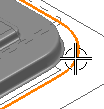
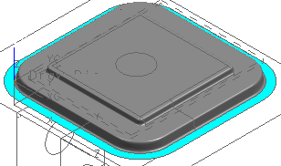

点击压料圈的边 选择步。
这一步用于修剪曲线以控制压料圈的边，它将指定压料圈的外部修剪曲线。
如果您不提供此信息，压料面曲面的边将用作压料圈的面。在多数情况下，这些曲线等效于毛坯的边。
在这个模型中，外部修剪曲线是包围冲模输出特征的封闭样条线 。而冲模输出片体的外部边界边则作为压料圈的内部修剪边界。
当正交投影到压料面上时，内部修剪边界必须是封闭的。在这个模型中，内部修剪边界由冲模输出特征的外部边正交投影到压料面得到。
在过滤器列表中选择曲线。
选择下列曲线作为压料圈的边。

在压料圈对话框中，确保未选中应用时确认复选框。
点击确定。
已完成压料圈并更新输出特征。

在部件导航器中查看新的压料圈特征。
压料圈使用压料面曲面并将其修剪到工艺补充面的外部边，然后它被缝合到工艺补充面，成形冲压工序曲面变为一个片体以表示拉延工序所得到的钣金形状。
关闭所有部件。